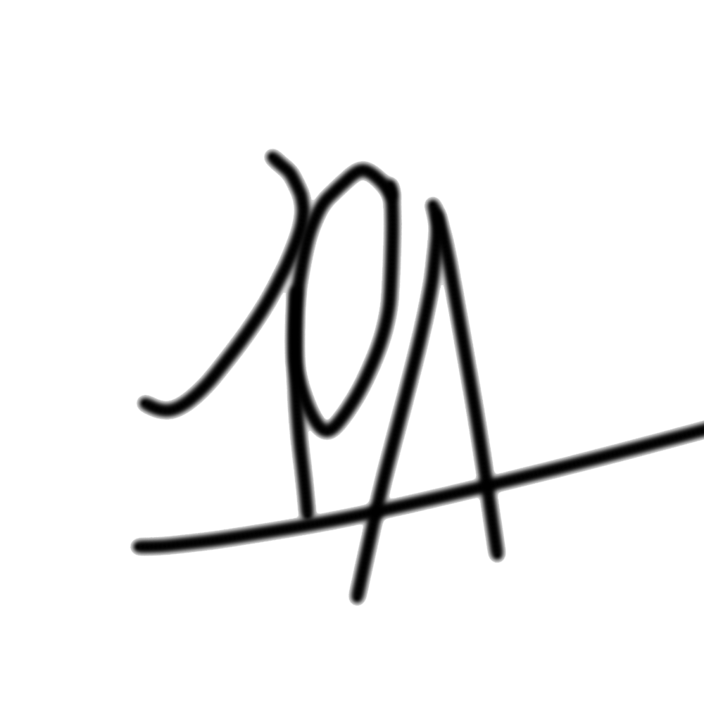
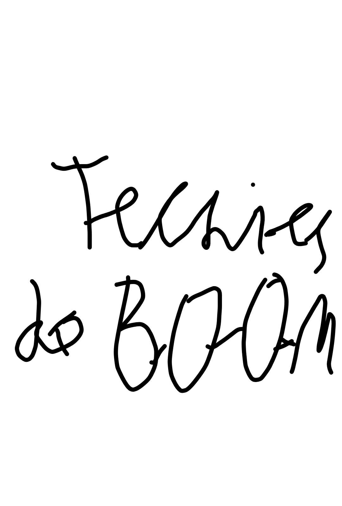
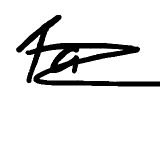

Джентельменское соглашение
Данным соглашением устанавливается, что участник аукциона который заказал более чем за 20 раблс/1000 пойнтов, тот натуральный балбес жи есть;
Совет джентельменов - законодательный и исполнительный орган власти в чате;
Для вступления в совет джентельменов нужно подать заявку секретарю, по ссылке (чтобы секретарь мог вам ответить, нужно чтобы у вас были открыты личные сообщения на твиче);
Все решения принимаются советом джентельменов;
За нарушение данного соглашения предусматриваются санкции по отношению к нарушителю (зарежу нахуууууууууй);
Размер наказания опредиляется колективным решением совета джентельменов;
Незнание данного соглашения не освобождает нарушителей от ответственности за нарушение;
Если в ходе обсуждения наказания возникают разногласия среди джентельменов, последнее слово остается за главным джентельменом, или в его отсутствии, за его заместителем;
Если нарушитель попытается оспорить выдвинутый джентельменами приговор он успешно пойдет нахуй;
Предлагать правки может любой член совета джентельменов, но вносятся они в соглашение только в присутсвии всех членов совета и только по достижению консенсуса;
Все разногласия решаются в пользу совета джентельменов;
Соглашение было создано колективно первой четверкой джентельменов:

joklum_228 
Saetis 
not_tazik_blue .

{kind=link}